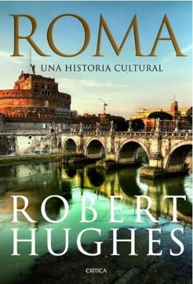

Roma. Una historia cultural
Reseña por Jorge I. Zuluaga

Ver reseña en GoodReads (necesita cuenta)
Por esta razón, y con un viaje a Roma que se aproximaba, decidí buscar un buen libro que me sirviera para preparar esta nueva experiencia viajera y corregir mi falta de "preparación" pasada. Eso es justamente "Roma, una historia cultural": el libro ideal para leer antes, durante o justo después de visitar la Ciudad Eterna.
No es una guía turística. Tampoco es un libro de Historia cualquiera. No enumera monumentos, rutas o lugares que deban visitarse; ni siquiera una lista pormenorizada de eventos o personajes que fueron importantes a lo largo de la historia de Roma. Aun así, la lectura de sus 12 capítulos ilustra lo suficiente sobre todos estos aspectos de la ciudad, lo cual sirve para hacer de la experiencia de visitarla algo diferente.
El estilo de Hughes es una extraña mezcla de divulgación histórica, crítica de arte y ácidas reflexiones sobre el mundo pasado y presente. Sin leer muchas de las reseñas que hay publicadas aquí de este libro, creo entender por qué la calificación que obtiene no es precisamente muy alta, 3.84 cuando escribí la reseña, un puntaje que he visto solo en libros mediocres. Y es que el tono muy personal de Hughes para tratar la historia de una ciudad como Roma puede no gustarle a las personas que quizás se acercan buscando un texto riguroso de divulgación histórica.
A mí, personalmente, me ha encantado. He tenido la oportunidad de leer otros libros de Historia de Roma, en especial los de Mary Beard y otros autores reconocidos, y en todos ellos siempre me faltó, por un lado, la perspectiva más personal del autor y, por el otro, una Historia de la ciudad posterior a la caída del Imperio.
Este libro, a diferencia de la mayoría de historias de Roma que he podido leer, y que están en general obsesionadas con la antigüedad, cubre casi 2700 años de historia. Desde la mítica fundación y el período monárquico, pasando por la república y, naturalmente, por el archiconocido período imperial, con sus autócratas de primera y también con los desquiciados, algunos que han atraído la atención popular por siglos y han reducido incorrectamente la imagen de los emperadores, tal y como insisten hoy muchos y muchas historiadoras, incluyendo a Hughes, a una simple sarta de megalómanos.
Pero no se reduce a esto, por supuesto.
La "Roma" de Hughes penetra en la mucho menos divulgada historia del imperio tardío, con sus poliarquías, sus persecuciones a la secta de los cristianos y la lenta institucionalización del cristianismo. También narra la historia de la Roma medieval, con su transición de la institución del prínceps pagano a la del papa cristiano. El período de la fundación y construcción de las iglesias pioneras, San Pietro, Santa Maria Maggiore, San Giovanni in Laterano; de las reliquias, pedazos de cruz, paja del pesebre, escaleras pisadas por Jesús, etc.; reliquias que convirtieron a Roma por primera vez en el centro de peregrinación que no ha dejado de ser.
El grueso de la historia de Roma narrada por Hughes en este libro, sin embargo, está en la dilatada y decisiva Roma del Renacimiento y la modernidad (siglos XV a XIX); períodos durante los cuales se concibió y construyó la Roma que visitamos hoy en día. Este fue para mí un descubrimiento que, como decía al principio, hubiera preferido conocer cuando fui por primera vez a la Ciudad Eterna hace más de 20 años. Los capítulos dedicados a la obra decisiva de los papas Julio II, Sixto V, Clemente VIII, y por supuesto de todos los genios artísticos de los que se rodearon, Bramante, Alberti, Bernini, Michelangelo, Raffaello, Borromini, que para bien o para mal construyeron la Roma barroca, la ciudad llena de arte extraordinario de la que disfrutamos los turistas del presente.
Fue muy emocionante visitar la ciudad y ver las vías, las iglesias, los monumentos que nos legaron los personajes de aquellos tiempos y hacerlo después de leer sus historias o la versión de las mismas narrada por Hughes.
Cuando crees que no se puede sacar mucho más de la historia de Roma, Hughes te reserva para los últimos capítulos las historias menos conocidas por la mayoría —yo personalmente era casi totalmente ignorante del tema— de la Italia del Risorgimento, del nacimiento de la república. En estos capítulos comprendí, por ejemplo, que uno de los monumentos más notables de la Roma contemporánea, el monstruoso pero imperdible monumento a Vittorio Emanuele, contiene una de las más grandes injusticias de la historia de Roma: un edificio gigante de mármol blanco —un mármol ajeno a la Roma previa— dedicado a un personaje sin mayores luces. La mayoría de los visitantes imaginamos que fue este rey el unificador de Italia y olvidamos a los rebeldes, encabezados entre otros por Giuseppe Garibaldi, que deberían ser sin dudarlo aquellos por los que se debieron levantar los monumentos.
Por la profesión del autor, crítico de arte, la Historia de Roma de Hughes se centra especialmente en la historia del arte romano, no solo del antiguo o del medieval y renacentista, sino también del moderno, llegando incluso hasta el cine del siglo XX. Lamentablemente, sin embargo, el libro carece de cualquier ilustración, lo que limita significativamente la experiencia visual, especialmente en estos apartes dedicados a las artes. Personalmente, leí buena parte del libro mientras estaba atrapado en aviones, sin una conexión a internet que me permitiera buscar las obras y los personajes de los que habla el autor.
Como mencioné antes, una de las cosas que puede hacer que algunas partes del libro sean chocantes es la abierta sinceridad con la que parece escrito. Yo también encontré apartes que me parece que se salieron de tono y que no me gustaron: un cierto machismo y misoginia e incluso una velada admiración por el proyecto fascista de Mussolini. Aun así, creo que las cosas que no me gustaron son muchas menos que las que disfruté.
En síntesis: no me cabe la menor duda, insisto, de que "Roma, una historia cultural" es el mejor libro para leer antes, durante o justo después de visitar Roma.
Después de terminar el viaje que me motivó a conseguir y leer este libro, pero también después de leer este libro, me quedo con el fragmento del poema de Marcial, citado por Hughes en su capítulo sobre los Augustos: "Roma, diosa de tierras y pueblos, a la que nada puede igualar y a la que nada puede siquiera aproximarse".